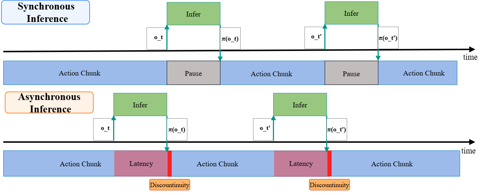
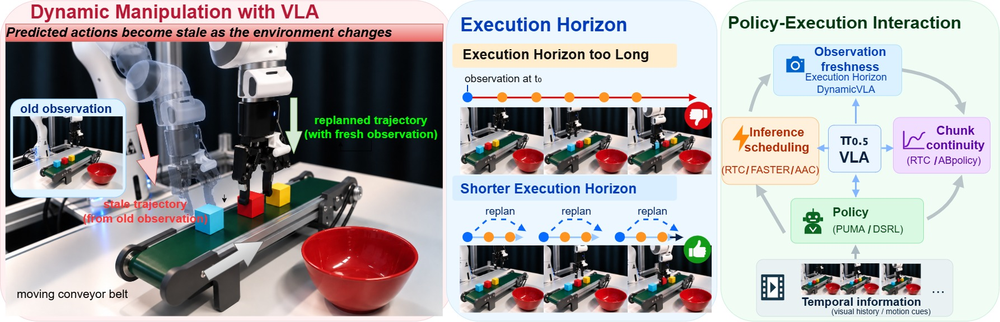
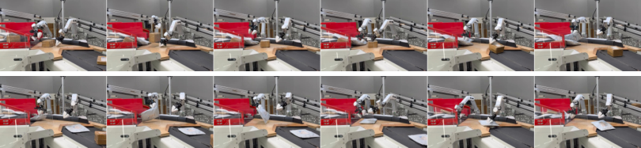
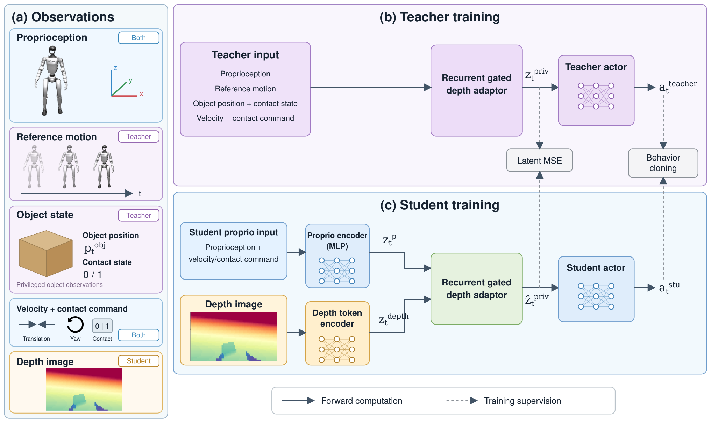
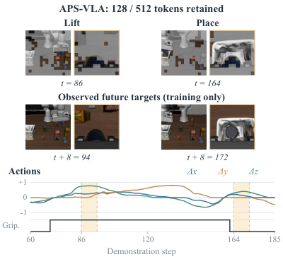
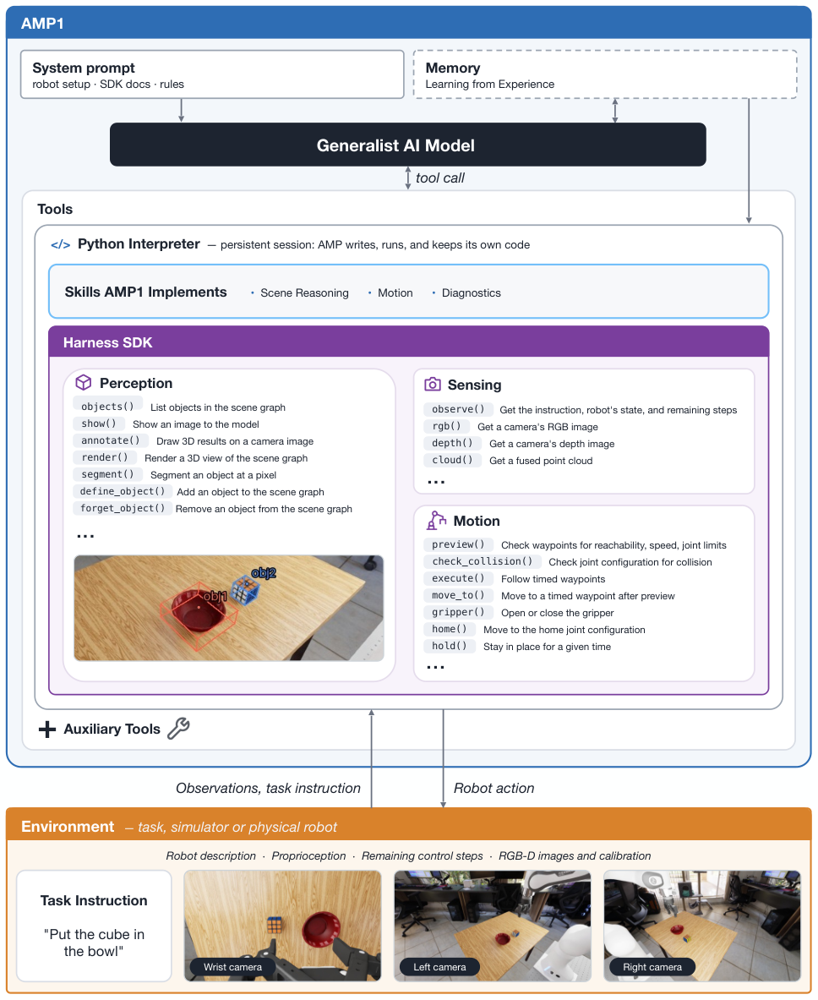
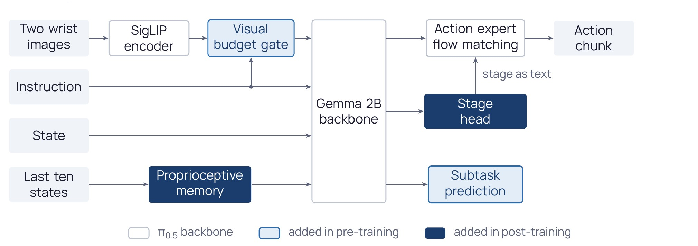
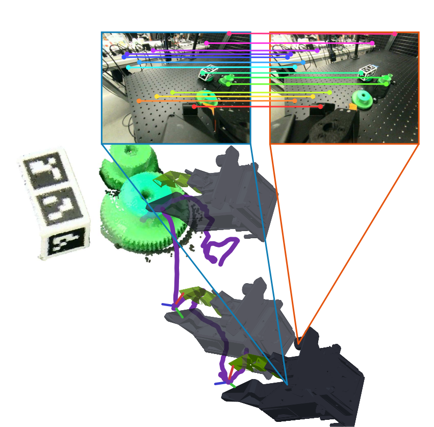
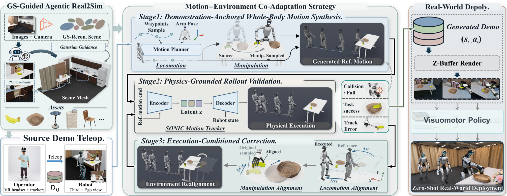

目录 · 8 节
1先把几个词说清楚2预测多长：大约一秒3少做几步再看，为什么常常没用4走一遍：同一块红方块，四种跑法5降延迟和接得平，哪个更有用6改模型，还是改执行方式7这对做机器人策略的人意味着什么8局限方块已经被传送带带走了，机械臂还在照着刚才的画面去抓：VLA 的反应速度卡在哪一条传送带以每秒 5 厘米的速度往右走，上面排着三个颜色不同的方块。机械臂要从里面挑出红色那个，放进旁边的碗里。
机械臂看一眼画面，模型一口气算出接下来一秒钟的动作，机械臂照着执行。可执行到一半，红方块已经往右挪了好几厘米，机械臂还在往方块原来的位置伸手。
现在的 VLA 模型（看图、听指令、直接输出机械臂动作的大模型）很多是这样工作的：一次预测一整段未来动作，叫一个动作块（action chunk）。物体不动时，这样省推理、动作也顺。物体一动，动作块还没执行完就过时了。
卡尔斯鲁厄理工学院（KIT）的这篇论文，拿预训练好的 π0.5 做实验，问一个很实际的问题：怎么让它在动态场景里反应更快。常见的办法有好几类。一类是少执行几步就重新看一眼；一类是让推理和动作同时进行，不再停下来等；一类是加速出第一个动作；一类是让新旧两段动作接得平滑；还有给模型加运动信息，或者用强化学习微调。作者把这些办法放进同一套 π0.5 框架，在两个动态仿真基准和三个真机任务上逐一比较。结论是：预测大约一秒最好；少执行几步，在异步推理时帮助更大；在他们测的方法里，成功率最高的是一种让动作衔接连贯的方法，延迟更低的方法并没有超过另一种衔接方法。最出乎意料的是，传送带任务上，同一个模型不做任何训练，只改每次执行的步数，成功率就和强化学习微调后相当。机器人反应快不快，执行方式和策略本身一样重要；这些结论来自 π0.5 和一小组任务，真机每个设置只有 15 到 20 次试验。
先把几个词说清楚
模型每看一次画面，输出一个动作块，里面有 H 个动作，H 叫预测长度。机械臂不一定把这 H 个动作全做完，只做前 s 个就重新看画面、重新预测，s 叫执行步数。H 决定模型往前想多远，s 决定机械臂做多少才回头再看一眼。
同步执行的意思是：机械臂做完 s 步，停下来，等模型算出下一块，再接着动。异步执行是：机械臂还在做当前这块的时候，模型已经在用新画面算下一块，机械臂不用停。
机械臂此刻执行的动作，是根据多久以前的画面算出来的？这段时间论文叫观测年龄。观测越老，物体离画面里的位置越远。

预测多长：大约一秒
作者先训练了不同预测长度的模型。在 DOM（一个物体被推着运动的抓放仿真基准）上，最好的是 25 步；在 DOMINO（另一个动态操作仿真基准）的两个任务上，最好的是 30 步。两个仿真器的控制频率分别是每秒 25 次和 30 次，所以两个最优值换算成时间，都正好是一秒的动作。
作者在结论里据此建议按秒来选预测长度。
少做几步再看，为什么常常没用
直觉上，s 越小，机械臂越常看新画面，反应应该越快。实验给出的答案是：不一定。
在真机传送带任务上，s 取 10 时，同步执行的 π0.5 和 PUMA（后面会讲，它给模型加了运动信息）都只有 20% 的成功率，异步方法却能到 60% 到 75%。这说明同样每 10 步看一次画面，同步和异步的成功率能差三倍以上。
在 DOM 上，同一个模型把 s 越缩越小，同步和异步的差距也越拉越大。
原因在同步执行的「停」。s 越小，动作块越多，停下来等推理的次数就越多。每停一次，机械臂不动，物体照样在走。异步执行时，下一块在当前块还在执行时就开始算。只要推理赶得上执行这 s 步的时间，s 再小也不多等。后面要讲的 RTC（实时分块，Real-Time Chunking）就把执行步数的下限设成推理延迟对应的步数。
走一遍：同一块红方块，四种跑法
下面用传送带快速档来走一遍。传送带速度每秒 5 厘米、动作频率每秒 20 次、预测 20 个动作（正好一秒），都来自论文。推理时间按 0.3 秒算，这是示意，参考的是论文表 5 里同步 π0.5 在 A100 上拿到第一个动作要 0.26 到 0.30 秒。
第一步，同步，s 取 10。机械臂拍一张照片，然后停下来等 0.3 秒，所以方块先走了 5 × 0.3 = 1.5 厘米。拿到动作后做 10 步，用时 10 ÷ 20 = 0.5 秒，方块又走了 2.5 厘米。这意味着做到这一块最后一个动作时，依据的照片已经是 0.8 秒前的，方块离照片里的位置差了 4 厘米。
第二步，同步，把 s 缩到 5。每一轮变成停 0.3 秒、动 0.25 秒，所以观测年龄降到 0.55 秒，方块偏差降到约 2.8 厘米。代价是机械臂有 0.3 ÷ 0.55，也就是一半以上的时间站着不动。整个抓取过程被切成更多段，每段都要停一次。
第三步，换成异步，s 还是 5。模型在机械臂动的同时算下一块，机械臂不再停。论文表 6 里，异步 π0.5 在传送带上拿到第一个动作只要约 0.145 秒。但新出的这块动作是从 0.145 秒前的照片算起的，它的第一个动作，不一定正好接在机械臂此刻的位置上。差得远，机械臂就要跳一下。这一跳就是图里那块红色的不连续。
第四步，把动作频率从每秒 20 次提到 30 次。同样 10 个动作，用时从 0.5 秒缩到 10 ÷ 30 ≈ 0.33 秒，所以方块在这一块里只走了约 1.7 厘米，而不是 2.5 厘米。论文里，在快速档上把频率提到 30 次后，ABPolicy（一种让新旧动作接得平的方法，下一节讲）的成功率从 13% 升到 93%。
走完这四步可以看出，s 缩小只是让机械臂更常看画面。在这个算例里，观测变旧来自两部分：停下来等推理，以及执行动作本身的时长。异步省掉了等，却多出一个新旧动作块接不接得上的问题。
降延迟和接得平，哪个更有用
作者比较了两类针对异步执行的办法。FASTER（一种加快出第一个动作的方法）和 DynamicVLA 让动作来得更快：FASTER 先把最近几步动作算好就发出去，DynamicVLA 一边执行一边持续推理，并丢掉已经过时的动作。RTC 和 ABPolicy 让新旧动作块接得平：RTC 在生成新动作块时，让它跟上一块还没做完的部分对齐，不需要额外训练；ABPolicy 把动作表示成平滑的样条曲线，并在切换前把新曲线的开头修到跟刚执行过的动作对上。
结果是 ABPolicy 最好，在传送带上到了 95%（它只在 s 取 9 时测过）。RTC 和 FASTER 的成功率打平，而 FASTER 的延迟更低：论文只在静态任务上测了延迟，FASTER 拿到第一个动作约 0.1 秒，RTC 约 0.33 秒。作者认为原因在衔接：新动作块的起点离旧动作块的终点很远时，机械臂只能跳一下。论文没有直接测量跳变的大小，所以这是一种解释，不是测出来的结论。
| 设置 | 传送带成功率 |
|---|---|
| 同步 π0.5，s 取 10 | 20% |
| 异步方法，s 取 10 | 60% 到 75% |
| ABPolicy，s 取 9 | 95% |
| ABPolicy 快速档，20 次每秒 | 13% |
| ABPolicy 快速档，30 次每秒 | 93% |
（数字来自论文 Figure 3 与表 3；前三行每格 20 次试验，后两行每格 15 次）
最优的 s 还跟模型训了多久有关。同样预测 20 步，训练 1000 步的模型在 s 取 5 时最好，训练 5000 步的模型在 s 取 15 时最好。作者也试了让模型自己决定 s 的 AAC（自适应动作分块）：它一次采 20 个候选动作块，看它们分歧大不大，分歧大就提前重算。AAC 从来没赢过最好的固定 s，在静止和快速传送带上还失败了。作者的解释是，分歧大常常是因为场景陌生或几种动作都行，这时多看一张照片也改变不了决定；而模型很有把握时，物体可能正要被带走。 Hoot 说
AAC 一次采 20 个候选动作块，看它们分歧大不大，分歧大就提前重算。下面用传送带上的红方块把两种时刻走一遍。传送带每秒 5 厘米来自论文；两种时刻里候选是否一致是示意，用来对照论文给出的解释，不是实验结果。
采 20 个候选 → 看分歧大小 → 分歧大却改不了决定 / 意见一致却按旧画面做 → 重算时机错了
- AAC → 20 个候选动作块AAC 一次并行走 20 个候选动作块，用它们的分歧（熵）来决定这块动作要做多久。分歧大，就提前结束，再拍一张照片重算；分歧小，就把当前这块做久一点。候选数 N = 20
- 分歧大 → 提前重算示意第一种时刻：20 个候选指向几种都说得通的抓法，分歧很大，AAC 提前重算。可是场景要么陌生、要么几种动作都行，多看一张照片也改变不了决定，还因为要采 20 个候选，下一块动作来得更晚。
- 意见一致 → 继续按旧画面执行示意第二种时刻：20 个候选都指向照片里方块所在的位置，模型很有把握，分歧很小。AAC 把当前这块做久一点，不再提前看新照片。
- 传送带 → 方块位置传送带仍在按每秒 5 厘米把方块带走。AAC 越有把握，就越倾向把旧计划做久一点，方块离那 20 个候选共同瞄准的位置就越远。传送带速度 = 5 厘米/秒
- 用分歧当触发 → 重算时机所以 AAC 会在新照片帮不上忙的时候重算，又在物体正要被带走、模型却很有把握的时候不重算。论文里它从未赢过最好的固定 s，在静止和快速传送带上还失败了。

出处
论文正文：AAC never beats the best fixed horizon… Entropy is the wrong trigger here… AAC therefore replans at the wrong moments；附录 B.2：N=20 个候选动作块。传送带每秒 5 厘米来自论文的传送带快速档设定。两种时刻是示意对照，不是实验结果。改模型，还是改执行方式
剩下两种办法改的是模型本身。PUMA 给模型输入过去几帧的光流（画面里每个像素往哪动），训练和推理时都算；训练时还让它预测目标物体接下来的特征，这个预测分支推理时不用。它在传送带上比 π0.5 好，在滚罐子任务上反而更差。异步执行对它影响很大：同步跑，短 s 下它和基线一样失败；异步跑，每个测过的 s 都能到 60% 到 70%。
DSRL 是一种强化学习方法。它不改 VLA 的参数，只训练一个小策略去挑 VLA 生成动作时用的噪声输入。针对最难的传送带条件训练后，成功率从 0 升到 60%；在 DOM 上从 32% 升到 47%。但它只能挑出 VLA 本来就会的动作，噪声调大后收益就没了。
把九种传送带条件平均起来看，DSRL 让训练 1000 步的模型升到 64% 到 69%，有的条件还变差了。而同一个模型不做任何训练，把 s 设成 5，成功率就是 71%。作者的原话是，改执行方式和训练模型值一样多。

这对做机器人策略的人意味着什么
评测一个 VLA 在动态任务上行不行，要把执行方式当成实验变量，和模型一起报。
比较两个模型之前，先固定同一套执行设置：预测几秒、执行几步、同步还是异步、动作频率多少。否则一个模型比另一个高 10 个点，可能只是 s 刚好选对了。论文建议，成功率旁边同时报三个量：观测年龄、新动作多久能拿到、新旧动作块之间跳了多少。
想让现有模型在动态场景里更快，可以先试不花训练成本的改动：改成异步推理，加一个让新旧动作块对齐的步骤，把动作频率调高，再扫几个 s。这些都试过以后，再考虑强化学习微调或加运动信息。
局限
所有结论都基于 π0.5。作者把 FASTER、DynamicVLA、ABPolicy 等方法移植到 π0.5 上，只取了原方法的部分机制，并不是完整复现原系统。
真机每个设置只做 15 到 20 次试验，滚罐子和拉杯子任务里物体是人手推动的，每次轨迹不完全一样，作者自己也提醒小的差距不要过度解读。各方法测试的 s 也不全，ABPolicy 只测了 s 取 9 一个点。
读完这篇，你觉得
夜读鸮记下了，谢谢你的反馈。
点一下即可，无需登录；再点一次撤回。只统计匿名次数，不记录你是谁。
相关论文RELATED

Embodied · 2026-11-16Scaling VLA Serving Under Robotic Execution Constraints作者的公司有几百台 VLA 机器人在真实环境里干活，要共享 GPU 才能压低推理成本。难点在于，机器人等新动作时还在执行旧动作，同样大小的请求，有的机器人手上动作快用完了，必须马上回复，有的还能等。GPU 上同时多塞一个请求，又会拖慢正在算的请求，动作队列一空，机器人就得停下来等。XInfer 把 VLA 各阶段的计算拆开，依赖满足就往前算，调度时按每台机器人当下的紧急程度决定先算谁、什么时候允许新请求挤进来。在三个 VLA 模型和来自生产的负载上，一张 GPU 在满足实时要求下能服务的机器人数，是几种对比系统的 1.26 到 3.75 倍。服务机器人集群时，请求的紧急程度取决于机器人手上还剩多少动作。 Embodied · 2026-10-27Coupling Execution Horizon and Sampling Depth in Flow-Matching VLA Policies这篇论文发现，基于流匹配的视觉语言动作模型里，求解动作的迭代步数和每次执行的动作步数是耦合的，最优选择还会反转。这类模型从一段随机噪声出发，用数值求解一步步把它推成一段平滑的动作。部署时通常把两者分开调：执行步数用来摊薄推理延迟，迭代步数则保持很高以求精确。频繁重新规划时，迭代步数少确实更差；一次执行很长一段动作时，迭代步数少反而更好，因为粗略求解让动作更集中在平均轨迹附近，减少了开环执行中误差的累积。每次只执行 5 步时，迭代 10 步更好。每次执行 20 步时，迭代 2 步反而更好。这个规律在多个基准和真机上都成立，不用训练就能降延迟、提成功率。
Embodied · 2026-10-27Coupling Execution Horizon and Sampling Depth in Flow-Matching VLA Policies这篇论文发现，基于流匹配的视觉语言动作模型里，求解动作的迭代步数和每次执行的动作步数是耦合的，最优选择还会反转。这类模型从一段随机噪声出发，用数值求解一步步把它推成一段平滑的动作。部署时通常把两者分开调：执行步数用来摊薄推理延迟，迭代步数则保持很高以求精确。频繁重新规划时，迭代步数少确实更差；一次执行很长一段动作时，迭代步数少反而更好，因为粗略求解让动作更集中在平均轨迹附近，减少了开环执行中误差的累积。每次只执行 5 步时，迭代 10 步更好。每次执行 20 步时，迭代 2 步反而更好。这个规律在多个基准和真机上都成立，不用训练就能降延迟、提成功率。
Embodied · 2026-11-04ReGATE: Recurrent Gated Visual Fusion for Reactive Humanoid-Object Interaction人形机器人去抱箱子，手一靠近，箱子就会挡住头上的深度相机，可控制器还得把抓起、搬走、放下这一整套做完。这篇论文让机器人主要靠关节状态那条通路行动，深度画面只当作一路由学出来的门控缩放的修正，设计上希望画面不可靠时少放进来；前几帧攒下的信息存在循环层的记忆里，画面断了也不会马上丢。仿真里抓取静止箱子的成功率是 85.2%，同样测法下对比方法 VisualMimic 只有 48.5%。在 Unitree G1 真机上，相机看过箱子一眼后被完全挡住，机器人仍然抓到了箱子。视线会被挡住时，以关节状态为主、按需采信画面更稳。
Embodied · 2026-11-12APS-VLA: Action-Guided and Future-Aware Token Pruning for Efficient Vision-Language-Action ModelsVLA 每一步都要处理几百个视觉 token，推理很慢，可下一步动作往往只取决于画面里的一小块。这篇论文在冻结的 VLA 前面加了一个小打分器，从示范轨迹里学该留下哪些 token。训练时有两个要求：留下的 token 要让原模型给出和看全图时一样的动作，还要能配合示范动作预测几步之后的画面变化。部署时打分器只挑一次，原模型参数和出动作的方式都不变。在 LIBERO 上剪掉 75% 的视觉 token，推理快了 1.57 倍，成功率只比不剪低 1.25 个百分点。再剪狠一些，速度几乎不再涨，成功率却掉得更快。该留哪些 token，要看它对接下来的动作和画面变化有没有用，而不只是看它和指令像不像。这和推荐里按下游目标学特征筛选是同一个思路。
Embodied · 2026-11-10On Agentic Manipulation Policies机器人操作不一定非要靠大量演示数据训练专用策略。这篇论文让一个通用大模型当 agent，直接给机械臂下指令，边做边看情况调整，不用任何演示，也不做针对任务的训练，成功率反而远高于专门训练的 VLA 策略。作者的参考实现 AMP1 在 RoboLab-120 基准上零样本成功率达到 85.6%，领先的 VLA 策略只有 49.2%；在三台真机、十二个任务上也几乎全部成功。系统没给它抓、推、放这类现成技能，它自己摸索出寻找藏起来的物体、拿物体当工具、校准相机等办法。通用模型直接当控制器，可能比专门训练的策略更通用、更稳。
Embodied · 2026-11-05AIRoA-0: Long-Horizon, Precise, Cross-Embodiment Manipulation from Handheld Data机器人模仿学习一般要先在机器人上遥操作采数据，AIRoA-0 一条机器人数据都没采。它只用人拿着手持夹爪录下的 16,151 小时双手演示训练，机器人只在测试时才出场。在一个训练数据从没录过的场地，它只靠两只手腕上的相机，完成分拣零件、给扫地机器人换拖布和刷子、叠毛巾等十项任务，平均成功率 78%。同样用这些任务的演示做后训练，另外四个视觉语言动作模型（VLA）里最好的只有 27%。采数据不必绑在某一台机器人上，装同款夹爪的机器人都能直接用。
Embodied · 2026-10-29OpenJaws: An Open Hardware UMI Framework with Stereo Localization for Generalist Manipulation用手持夹爪（UMI）在野外采机器人示教数据已经很流行，但动作标签准不准，取决于从腕部相机视频里还原夹爪轨迹的那一步。原版 UMI 用单目相机加 IMU（惯性测量单元），单目看不出真实尺度，还要预先建图、贴标记物来稳住。OpenJaws 把相机换成一台百元级的双目相机，两只镜头的间距是标定好的，三角化直接给出真实尺度。在作者新做的带真值评测集上，只比两者都能跟住的片段，双目重建的轨迹误差约 2.9 毫米，原版方案是 18.4 毫米，而且原版平均只跟住 37% 的帧。整套夹爪约 400 美元，软硬件全部开源。
Embodied · 2026-10-28Zero-HLM: Generalizable Humanoid Loco-Manipulation without Real Robot Data人形机器人要学会走到桌前、拿起香蕉再放进篮子这类长任务，通常要靠人遥操作采上百条真机示范，桌子挪个位置往往就得重采。Zero-HLM 改为全部在仿真里造数据。它用手机拍一圈真实房间，重建成既像照片、又能做物理交互的仿真场景，再把少量遥操作示范自动改写成上千条新示范。每条新示范随机换一个机器人起点和物体、放置目标的位置，手的轨迹跟着目标一起移动，只留下在仿真里跑成功的。只用这些数据训练的策略直接上真机，三个任务平均成功率 66.7%，高于用真机示范训练的 46.7%。换到真机示范没覆盖的位置后，成功率从 23% 提到 69%。
讨论
欢迎补充实验细节、复现经验或不同看法。需 GitHub 登录。
正在加载讨论…